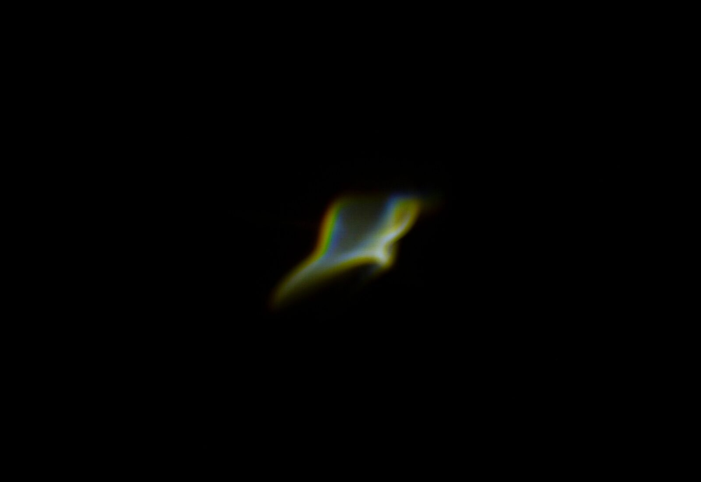
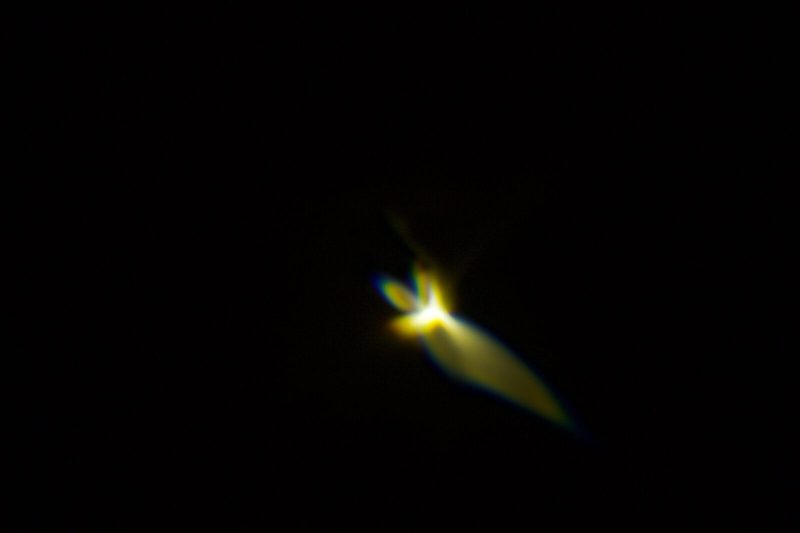
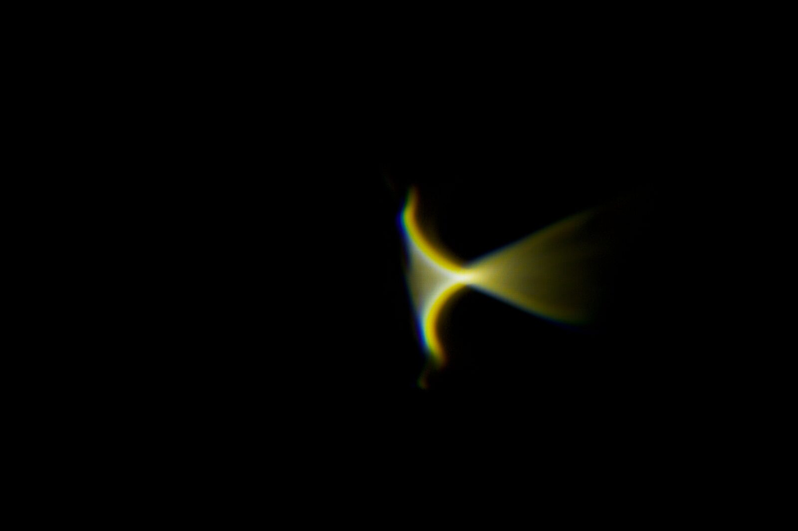
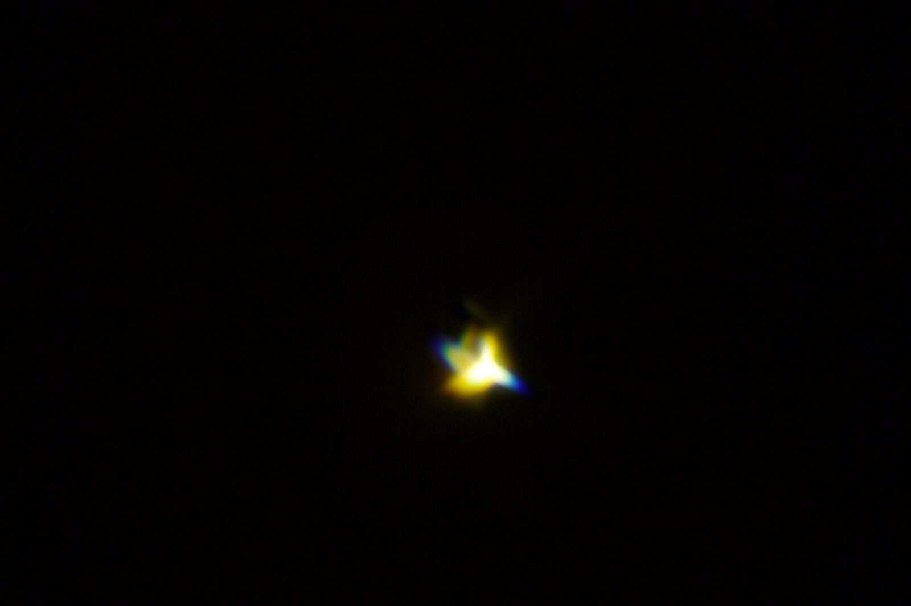
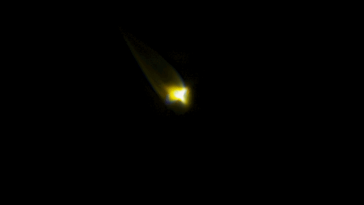
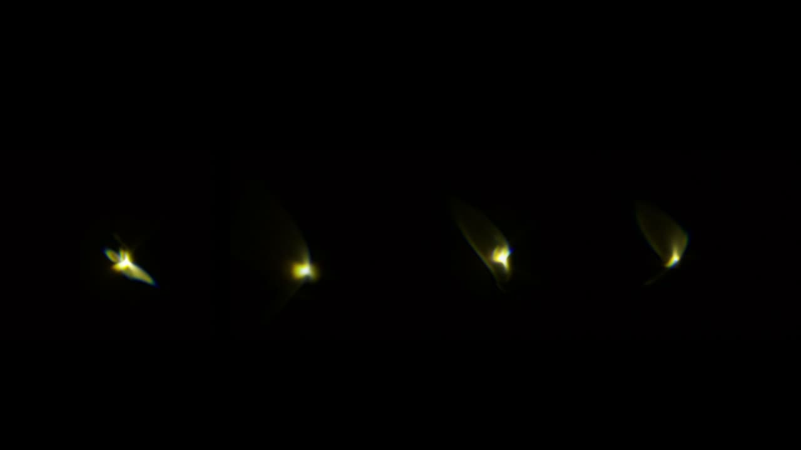

Spectra - Installation Proposal
International Conference on New Interfaces for Musical Expression •
Spectra
Author
Blake Johnston
Blake Johnston (Ph.D) is a sound artist, technologist, academic, and composer from Aotearoa, New Zealand. His practice sits at the intersection of experience design and emerging forms of technology, synthesising these fields to explore the perception of the audience. His work adopts new forms of technology to create environments and experiences across multiple disciplines including live performance, kinetic sculpture, musical mechatronics, wearable technology, and installation art.
Description
Spectra is a mechatronic audiovisual work that explores the materiality of the audiovisual medium by investigating the intersections of sound and light. Spectra adds to an ongoing discourse around the emergent field of physical audiovisual works, contrasting the dominantly screen-based works that are often conceptualised and discussed as audiovisual.
The work physically explores audiovisuality by investigating the commonalities of light and sound spectra, and how their respective spectra can be manipulated and controlled. The work features an array of modules, each with a fresnel lens, a mechatronic assemblage, a speaker, and a light source. In each module, pure white light is passed through the flexible fresnel lens which focuses light. A stepper motor attaches to one end of the lens, deforming it through rotation. As the lens is deformed and manipulated, it deconstructs the spectrum of white light, scattering it across space by creating chromatic aberrations. The nature of each aberration is driven by an audiovisual relationship, with each module using a sine tone to control the behaviour of its mechatronic assemblage.
Together, the array creates a rich harmonic spectrum, with each of its partials made visible through its audiovisual representation. In doing so, the spectral qualities of sound are imposed onto light, allowing for a physical interplay of audiovisuality.
Technical information and system requirements
The work is a self contained installation which will be documented in a local gallery space. As the conference has to be online, the work will be documented as a video to best communicate the core experiential elements.
Feasibility
The work’s core materials explore how the audiovisual domain can be explored through physical interaction, in order to reveal shared modalities between the spectral qualities of light and sound. This manifests as a scattering of sound and light through space, with an important emphasis on the materiality and physicality of the work. In order to communicate the work effectively in an online format, the work will be documented through video materials and binaural audio. This will allow for a focus on these core elements, and to allow for the audience to experience the spatial qualities of the physical assemblage and
The work has been shown at a prototype stage at Ars Electronica - Aotearoa garden. The video included in the media section shows a version of the work generated through stills complied to make a moving image. This video gives an indication of the resulting visual creation of the work however, doesn’t include the physicality of the mechanism and audio link that drives the movement and behaviour. The audio also gives an indication of the sonic palette, but the causal quality is not expressed.
The website link also shows the development of the physical prototype, and will continue to be updated throughout this process.
The style of documentation will be similar to previous works of mine, such as https://vimeo.com/590828852
Media
Please refer to https://www.blakejohnston.net/spectra for full documentation


The visual result of a module creating a chromatic aberration.








Showing patterns of chromatic aberration caused by deforming the lens.

▶Prototype video showing the visual and sonic language that spectra creates. As this is a prototype, the causal link between sound and light isn’t shown, instead the focus is on the resulting behaviours.
Access requirement (optional)
As the work will be documented and shown online, the access requirements will be sufficient technology to engage with the hosting method.